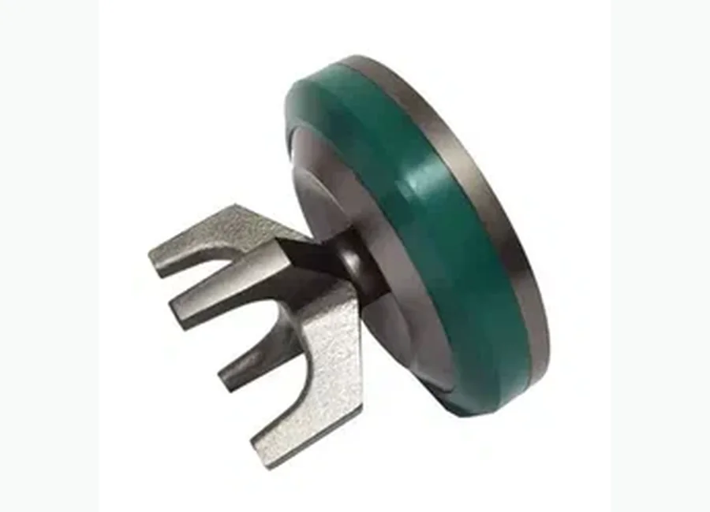
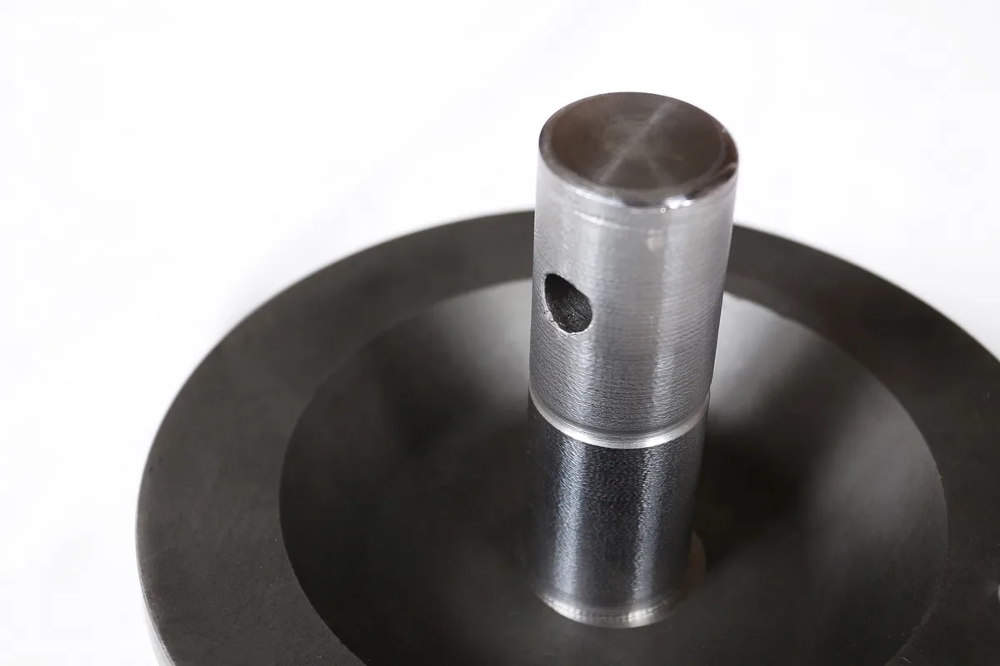
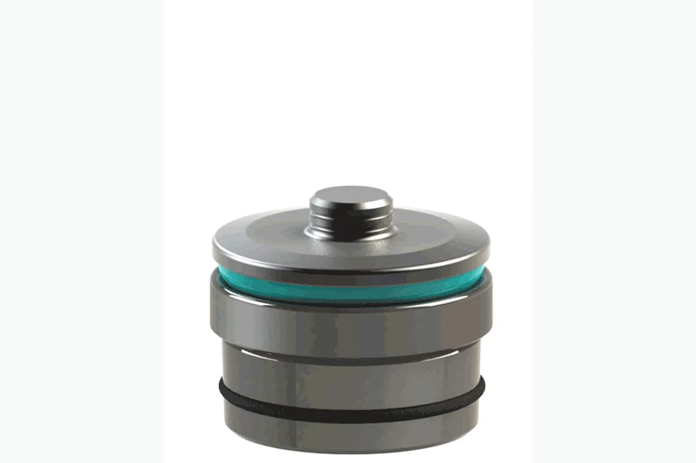

Как запросить цену
- Отправьте номер детали или модель оборудования.
- Можно приложить фото продукта или технический чертеж.
- Мы проверим совместимость и подготовим предложение.
Буровые насосы и запасные части
буровой насос SPM TWS. Поставка для буровых, ремонтных и нефтесервисных проектов в Казахстане и странах Центральной Азии.

Используется для нефтепромыслового оборудования, буровых установок, насосных систем, устьевых операций, тормозных и гидравлических узлов в зависимости от категории продукта.
Подбор спецификации, экспортная упаковка, коммуникация на русском языке, WhatsApp и email поддержка для покупателей Центральной Азии.
Описание
Изображения с пометкой «добавить в описание» размещены здесь, а не используются как главная фотография товара.



Модели и спецификации
Если в исходной папке есть таблица с моделями, она отображается здесь для удобства подбора и запроса цены.
| № | Наименование детали | Партномер SPM | Наименование детали | Партномер SPM | |
|---|---|---|---|---|---|
| 1 | Гидрокоробка | 1Р104705 | Гидрокоробка | 1Р104705 | |
| 2 | Плунжер 2,5″ | 2P104716 | Плунжер 3″ | 2P103345 | |
| 3 | Втулка бронзовая | 3P107525 | Втулка бронзовая | 3P107527 | |
| 4 | Уплотнение плунжера (мягкое) | P103572HP | Уплотнение плунжера (мягкое) | P100332HP | |
| 5 | Уплотнение плунжера (жесткое) | P103571HP | Уплотнение плунжера (жесткое) | P100331HP | |
| 6 | Корпус уплотнения | 3P103522 | Корпус уплотнения | 3P103524 | |
| 7 | Гайка плунжера (корончатая) | 3P104707 | Гайка плунжера (корончатая) | 3P104709 | |
| 8 | Сальник корончатой гайки | P104736HP | Сальник корончатой гайки | P102093HP | |
| 9 | Лобовая крышка (нижняя) | 3P104710 | Лобовая крышка (нижняя) | 3P104710 | |
| 10 | Лобовая крышка (верхняя) | 2P104711 | Лобовая крышка (верхняя) | 2P104711 | |
| 11 | Уплотнение лобовой крышки (верхней, нижней) полиуретановое | P105095 | Уплотнение лобовой крышки (верхней, нижней) полиуретановое | P105095 | |
| 12 | Уплотнение лобовой крышки (верхней, нижней) D-образное | P109313 | Уплотнение лобовой крышки (верхней,нижней) D-образное | P109313 | |
| 13 | Планка пружины клапана | 3P101634 | Планка пружины клапана | 3P101634 | |
| 14 | Пружина клапана | 4P104721 | Пружина клапана | 4P104721 | |
| 15 | Гайка лобовая | 3P104723 | Гайка лобовая | 3P104723 | |
| 16 | Клапан | 2A109608PP | Клапан | 2A109608PP | |
| 17 | Седло | 2A109605PP | Седло | 2A109605PP | |
| 18 | Уплотнение седла | P104289 | Уплотнение седла | P104289 | |
| 19 | Адаптер | P107455 | Адаптер | P107614 | |
| 20 | Манжета клапана | 2P110355 | Манжета клапана | 2P110355 | |
| 21 | Кольцо уплотнительное фторопластавое малое | P103576 | Кольцо уплотнительное фторопластавое малое | P103576 | |
| 22 | Кольцо уплотнительное фторопластавое большое | P103575 | Кольцо уплотнительное фторопластавое большое | P103370 | |
| 23 | Кольцо уплотнительное большое | P102244 | Кольцо уплотнительное большое | P103368 | |
| 24 | Кольцо уплотнительное малое | P18481 | Кольцо уплотнительное малое | P18481 | |
| 25 | Фланец напорный | 3P100182 | Фланец напорный | 3P100182 | |
| 26 | Уплотнение плунжера в сборе (пакинг) | 3A104731HP | Уплотнение плунжера (пакинг в сборе) | 3A104769HP | |
| 27 | Уплотнение плунжера (пакинг) малый | 3A107044HP | Уплотнение плунжера (пакинг РТИ) | 3A107009HP | |
| 28 | Гайка лобовая под датчик давления | 2P104719 | Шпилька плунжера | 4P101714 | |
| 29 | Торцевое уплотнение линии ВД2″ | 4P10229 | Гайка лобовая под датчик давления | 2P104719 | |
| 30 | Шпилька фланца напорного 1-8 UNCx31/2 | P14896 | Торцевое уплотнение линии ВД2″ | 4P10229 | |
| 31 | Гайка 1-8 UNC | P14897 | Шпилька фланца напорного 1-8 UNCx31/2 | P14896 | |
| 32 | Кольцо уплотнительное (торцевое) фланца напорного | P109509 | Гайка 1-8 UNC | P14897 | |
| 33 | Кольцо уплотнительное (D-образное) фланца напорного | P109509 . | Кольцо уплотнительное (торцевое) фланца напорного | P109509 | |
| 34 | Наименование детали | Партномер SPM | Наименование детали | Партномер SPM | |
| 35 | Гидравлическая часть | 1P100140 | Гидрокоробка | 1P102978 | |
| 36 | Кольцо опорное | 4P100143 | Плунжер 4,5″ | 2P103312 | |
| 37 | Уплотнение плунжера (мягкое) | P100141HP | Втулка бронзовая | 3P107531 | |
| 38 | Уплотнение плунжера (жесткое) | P100142HP | Уплотнение плунжера (мягкое) | P100195HP | |
| 39 | Втулка бронзовая (широкая) – адаптер | 4P100144 | Уплотнение плунжера (жесткое) | P100652HP | |
| 40 | Втулка бронзовая (узкая) – адаптер | 4P100145 | Корпус уплотнения | 3P103022 | |
| 41 | Сальник корончатой гайки | P102211HP | Гайка плунжера (корончатая) | 3P103027G | |
| 42 | Гайка плунжера (корончатая) 5,5″ | 3P100146G | Сальник корончатой гайки | P101252HP | |
| 43 | Плунжер 5,5″ | 3P100136 | Лобовая крышка (нижняя) | 3Р104373 | |
| 44 | Гайка лобовая | 4P100130 | Лобовая крышка (верхняя) | 3P105149 | |
| 45 | Лобовая крышка (верхняя) | 3P100137 | Уплотнение лобовой крышки верхней полиуретановое | P103068 | |
| 46 | Уплотнение лобовой крышки верхней D-образное | P100151 | Уплотнение лобовой крышки верхней D-образное | P109379 | |
| 47 | Пружина клапана | 4P100116 | Планка пружины клапана | 3P100176 | |
| 48 | Клапан | 2A109540PP | Пружина клапана | 4P100198 | |
| 49 | Манжета клапана | 2P110359 | Гайка лобовая | 3P104372 | |
| 50 | Седло | 2A109544 | Клапан с манжетой | 2A109537PP | |
| 51 | Планка пружины клапана | 3P100138 | Седло | 2A109541 | |
| 52 | Лобовая крышка (нижняя) | 3P100135 | Уплотнение седла | P103293 | |
| 53 | Уплотнение лобовой крышки нижней (пластиковое) | P100151 | Адаптер | P107469 | |
| 54 | Толкатель плунжера | 3Р100025 | Манжета клапана 4″ | 2P110356 | |
| 55 | Хомут плунжера 5″ | 3P100148 | Кольцо уплотнительное фторопластавое малое | P103064 | |
| 56 | Уплотнение плунжера в сборе | 3A104755HP . | Кольцо уплотнительное фторопластавое большое | P103371 | |
| 57 | Гайка 1-8 UNC | P14897 | Кольцо уплотнительное большое | P103369 | |
| 58 | Кольцо уплотнительное (торцевое) фланца напорного | P109509 | Кольцо уплотнительное малое | P103063 | |
| 59 | Кольцо уплотнительное (D-образное) фланца напорного | P109509 . | Уплотнение лобовой крышки нижней | P108291 | |
| 60 | Торцевое уплотнение линии ВД2″ | 4P10229 | Уплотнение плунжера в сборе (пакинг) | 3A105297HP | |
| 61 | Уплотнение лобовой крышки нижней полиуретановое | P100197 | Уплотнение плунжера (пакинг) малый | 3A109556 | |
| 62 | Фланец напорный | 3P100182 | Шпилька плунжера | 4P101714 | |
| 63 | Шпилька фланца напорного 1-8 UNCx31/2 | P14896 | Гайка лобовая под датчик давления | 2P103069 | |
| 64 | стойка | G04010100025AA | узел фалнеца выпускного | G04050200010AA | |
| 65 | крейцкопф в сборе | G04010700020AA | выпускная заглушка в сборе | G04050300009AA | |
| 66 | кривошипно-шатунный механчзм в сборе | G0410500012AA | Всасывающий коллектор | G06010000019AA | |
| 67 | корпус подипника | P0100455AA | болт | P2200478AA | |
| 68 | шайба для корпус подипника | P6900068AA | малой шток | P2600047AA | |
| 69 | пружинная шайба | 4313000022 | большой шток | P2600048AA | |
| 70 | шайба | 4317100022 | выпускная крышка в сборе | G04050300012AA | |
| 71 | болт для корпус подипника | P22008899AA | пружина | 5402550001 | |
| 72 | гайка | P1200649AA | P8200054AA | ||
| 73 | болт | P2200897AA | болк уплотнения | G04050400010AA | |
| 74 | Коробка передач уменьшения | G04020000002AA | крепежный болт | G04051000001AA | |
| 75 | эксцентровый вал | P4200011AA | плунжер 3" | P2300144AA | |
| 76 | болт | P2200898AA | плунжер 4" | P2300094AA | |
| 77 | шток в сборе | G04010103008AA | плунжер 3 1/2" | P2300143AA | |
| 78 | Болт крепления направляющей втулки | P2200439AA | уплотнение в сборе | G04050500018AA | |
| 79 | крейцкопф | P4400040AA | седло пружины | P7100431AA |
Запрос
Отправьте номер детали, модель, фото продукта или технический чертеж. Мы проверим совместимость и ответим с деталями предложения.